File:Flag of Germany.svg
Jump to navigation
Jump to search

Size of this PNG preview of this SVG file: 800 × 480 pixels. Other resolutions: 320 × 192 pixels | 1,024 × 614 pixels | 1,280 × 768 pixels | 2,560 × 1,536 pixels.
{kind=link}
{kind=link}
{kind=link}
{kind=link}
{kind=link}
Original file (SVG file, nominally 1,000 × 600 pixels, file size: 502 bytes)
Captions
Captions
Flag of the Federal Republic of Germany
Summary
| Description |
Deutsch: Flagge Deutschlands, Bundesflagge der Bundesrepublik Deutschland (→ Commons-Seite), 1949–1959 auch Staatsflagge der Deutschen Demokratischen Republik
Italiano: Bandiera della Germania
Español: Bandera de Alemania
Nederlands: Vlag van Duitsland
Română: Drapelul Germaniei
Latina: Vexillum Germaniae
Plattdüütsch: Flagg vun Düütschland
Alemannisch: Flagge vo Dytschland
Türkçe: Almanya bayrağı
العربية: علم ألمانيا
Português: Bandeira da Alemanha
Български: Знаме на Германия
Brezhoneg: Banniel Alamagn
Polski: Flaga Niemiec
Bosanski: Zastava Njemačke
Čeština: Německá vlajka
Dansk: Tysklands flag
Dolnoserbski: Nimska chórgoj
Ελληνικά: Σημαία της Γερμανίας
Esperanto: Flago de Germanio
Eesti: Saksamaa lipp
Suomi: Saksan lippu
Français : Drapeau de l'Allemagne
Nordfriisk: Foone foon Tjüschlönj
Gaeilge: Bratach na Gearmáine
עברית: דגל גרמניה
Hrvatski: Zastava Njemačke
Hornjoserbsce: Chorhoj Němskeje
Magyar: Németország zászlaja
Bahasa Indonesia: Bendera Jerman
日本語: 独逸の国旗
ქართული: გერმანიის დროშა
ភាសាខ្មែរ: ទង់ជាតិអាល្លឺម៉ង់
Ripoarisch: Faan vun Dütschland
Lëtzebuergesch: Fändel vun Däitschland
Lietuvių: Vokietijos vėliava
Latviešu: Vācijas karogs
Македонски: Знаме на Германија
Bahasa Melayu: Bendera Jerman
Malti: Bandiera tal-Ġermanja
Norsk bokmål: Tysklands flagg
Norrǿna: Þjóðfáni Þýðverskulands
Pälzisch: Flagg vun Daitschland
Piemontèis: Drapò dla Gërmania
Romani čhib: Styago Jermaniya
Русский: Флаг Германии
Slovenčina: Vlajka Nemecka
Slovenščina: Zastava Nemčije
Shqip: Flamuri i Gjermanisë
Seeltersk: Flaage fon Düütsklound
Svenska: Tysklands flagga
Українська: Прапор Німеччини
Volapük: Stan Deutäna
中文：德国国旗 |
| Source | Own work |
| Author | User:SKopp, User:Madden, and other users |
| Other versions |
Derivative works of this file: |
| SVG development | This flag was created with a text editor. Please do not replace the simplified code of this file with a version created with Inkscape or any other vector graphics editor |
{kind=link}
Dependent images
Please note: There is no law regulation on the exact shades of the German flag, so there may be differences to other versions.
| Used colors: | ||
| black | rendered as RGB 0 0 0 | |
| red | rendered as RGB 208 0 0 | |
| gold | rendered as RGB 255 206 0 | |
If you intend to modify the colors, remember to change all of these, too:
- Flag of Germany (3-2 aspect ratio).svg: 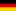
- Flag of Germany (state).svg: 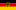
- German Olympic flag (1959-1968).svg: 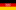
- Flag of East Germany with cut out emblem.svg: 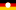
- Naval Ensign of Germany.svg: 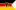
- Coat of arms of Germany.svg: 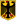
- Flag of Lower Saxony.svg: 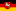
- Flag of Saarland.svg: 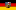
- Flag de-saarland 300px.png: 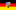
- Flag of East Germany.svg: 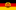
- Nuvola German flag.svg: 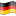
- Flag of Germany and Colombia.jpg: 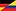
- Germany Gay flag.svg:

- (and probably several more) --Pumbaa80 23:24, 20 March 2006 (UTC)
Licensing
| This image of simple geometry is ineligible for copyright and therefore in the public domain, because it consists entirely of information that is common property and contains no original authorship. |
This file depicts the flag of a German Körperschaft des öffentlichen Rechts (corporation governed by public law). According to § 5 Abs. 1 of the German Copyright law, official works like flags are gemeinfrei (in the public domain).
Note: The usage of flags is governed by legal restrictions, independent of the copyright status of the depiction shown here. |

|
This image shows a flag, a coat of arms, a seal or some other official insignia. The use of such symbols is restricted in many countries. These restrictions are independent of the copyright status. |
File history
Click on a date/time to view the file as it appeared at that time.
{kind=link}
{kind=link}
{kind=link}
{kind=link}
{kind=link}
{kind=link}
{kind=link}
| Date/Time | Thumbnail | Dimensions | User | Comment | |
|---|---|---|---|---|---|
| current | 18:28, 26 September 2007 | | 1,000 × 600 (502 bytes) | Madden (talk | contribs) | letting the stripes overlap to avoid transparency effects after scaling down to small sizes |
| 12:04, 29 July 2007 |  | 1,000 × 600 (502 bytes) | Ms2ger (talk | contribs) | Valid SVG | |
| 06:09, 4 June 2007 |  | 1,000 × 600 (469 bytes) | Seewolf (talk | contribs) | {{Information |Description=Flag of Germany |Source= |Date= |Author= |Permission=GFDL |other_versions= }} | |
| 18:32, 20 August 2006 |  | 1,000 × 600 (351 bytes) | Madden (talk | contribs) | better code to avoid white stripes after scaling... | |
| 18:28, 20 August 2006 |  | 1,000 × 600 (351 bytes) | Madden (talk | contribs) | code to avoid white stripes after scaling | |
| 04:28, 22 April 2006 |  | 1,000 × 600 (469 bytes) | Florian Hurlbrink (talk | contribs) | ||
| 16:25, 20 March 2006 |  | 1,000 × 600 (469 bytes) | Madden (talk | contribs) | changed red to #DD0000, see discussion | |
| 16:16, 9 February 2006 |  | 1,000 × 600 (469 bytes) | Vzb83~commonswiki (talk | contribs) | Using the Pantone approximations, see discussion; scaled to 2x | |
| 22:30, 5 February 2006 |  | 500 × 300 (465 bytes) | Zscout370 (talk | contribs) | Wrote this using SVG code, colors from the latest image | |
| 06:07, 5 February 2006 |  | 500 × 300 (2 KB) | Denelson83 (talk | contribs) | Should use true black |
You cannot overwrite this file.
File usage on Commons
More than 100 pages use this file. The following list shows the first 100 pages that use this file only. A full list is available.
- Budapest
- Car
- Deutschland
- Ferry
- Fire engines
- Flag
- Flaggen Deutschlands
- Fountain
- Kazakhstan
- Motorcycle
- München
- National insignia
- Nuremberg
- Oberasbach
- Truck
- Україна
- User:Habakuk
- User:Paddy
- User:Yann
- File:Aachen circle of money.jpg
- File:Aachen devil and woman.jpg
- File:Aachen printen figure.jpg
- File:Airbus A319-100 Finnair OH-LVD.jpg
- File:Airbus A330-200 Emirates A6-EAL.jpg
- File:AirportFrankfurt fromair.jpg
- File:Alpincenter Bottrop.jpg
- File:Alte Veste f sw.jpg
- File:AmerikaGedenkBibliothek 20040902.JPG
- File:Beanbags.jpg
- File:Beethoven-Denkmal, Frankfurt.jpg
- File:Bremer Stadtmusikanten.jpg
- File:Car Opel Manta A.jpg
- File:Concolor 12 days.jpg
- File:Constructing a new zeppelin -uncovered rear frame.jpg
- File:De-Lübeck.ogg
- File:De-München.ogg
- File:Europaturmkanzel-groß.jpg
- File:Fischmarkt Zierikzee 1.jpg
- File:Flag of East Germany (1949-1959).svg (file redirect)
- File:Flag of East Germany (1949–1959).svg (file redirect)
- File:Flag of FRG.svg (file redirect)
- File:Flag of Germany small.svg (file redirect)
- File:Flag of States of Germany.svg (file redirect)
- File:Flag of West Germany.svg (file redirect)
- File:Frankfurt Nied Eisenbahnersiedlung 01.jpg
- File:Gasthuiskerk Zierikzee.jpg
- File:German Flag SVG.svg (file redirect)
- File:German flag.png (file redirect)
- File:Germany Flag.svg (file redirect)
- File:Hackesche Höfe Berlin.jpg
- File:Holocaust Mahnmal Berlin Stelenfeld.jpg
- File:Hopfield net.png
- File:Hungary szeged dome night 1.jpg
- File:Hungary szeged dome night 2.jpg
- File:Hungary szeged dome night 3.jpg
- File:Hungary szeged dome night 4.jpg
- File:Hungary szeged dome night 5.jpg
- File:Hungary szeged dome night 6.jpg
- File:Iris pseudacorus 01.jpg
- File:Iris pseudacorus 02.jpg
- File:Jakobikirche Stralsund 1.jpg
- File:Laporte-ball-trap-machine.jpg
- File:Lilium auratum phyllus.jpg
- File:Lilium auratum v virginale Flor.jpg
- File:Lilium auratum var virginale Habitus.jpg
- File:Lilium davidii1.jpg
- File:Lilium davidii2.JPG
- File:Lilium davidii3.JPG
- File:Lilium martagon bluete.jpg
- File:Lilium xanthellum var. luteum.jpg
- File:Nobelport Zierikzee 1.jpg
- File:Nobelport Zierikzee 2.jpg
- File:Notre Dame de Paris.jpg
- File:Reichsparteitagsgelaende 09 Silbersee Warning.JPG
- File:Reichsparteitagsgelaende Grosse Strasse 27.JPG
- File:Reichsparteitagsgelaende Kongresshalle Doku 48.JPG
- File:Reichsparteitagsgelaende Kongresshalle Halbnahe 37.JPG
- File:Reichsparteitagsgelaende Kongresshalle Laster Halbnahe 46.JPG
- File:Reichsparteitagsgelaende Kongresshalle Schnitt 36.JPG
- File:Reichsparteitagsgelaende Kongresshalle Volksfest totale 35.JPG
- File:Reichsparteitagsgelaende Kongresshalle innen 53.JPG
- File:Reichsparteitagsgelaende Kongresshalle totale 23.JPG
- File:Reichsparteitagsgelaende Kongresshalle totale Grosse Strasse 30.JPG
- File:Reichsparteitagsgelaende Saeulen 44.JPG
- File:Reichsparteitagsgelaende Silbersee 04.JPG
- File:Reichsparteitagsgelaende Silbersee 12.JPG
- File:Reichsparteitagsgelaende Zeppelinfeld 60.JPG
- File:Reichsparteitagsgelaende Zeppelinfeld 63.JPG
- File:Reichsparteitagsgelaende Zeppelinfeld Tribuene 58.JPG
- File:Reichsparteitagsgelaende Zeppelinfeld Tribuene 68.JPG
- File:Ruhr area-administration.png
- File:Ruhr area-map.png
- File:Side of the Great Mosque of Kairouan.JPG
- File:Sint Lievens Zierikzee.jpg
- File:Tower of the Great Mosque of Kairouan.JPG
- File:U-Bahn Berlin Alexanderplatz2.JPG
- File:U-Bahn Berlin Elsterwerdaer Platz.JPG
- File:U-Bahn Berlin Gleisdreieck.JPG
- File:U-Bahn Berlin Hermannplatz.JPG
- File:U-Bahn Frankfurt Station Schweizer Platz.JPG
.svg&redirect=no){kind=link}
.svg&redirect=no){kind=link}
{kind=link}
{kind=link}
{kind=link}
{kind=link}
{kind=link}
{kind=link}
{kind=link}
View more links to this file.
File usage on other wikis
The following other wikis use this file:
- Usage on ab.wikipedia.org
- Usage on ace.wikipedia.org
- Usage on ady.wikipedia.org
- Usage on af.wikipedia.org
- Christene
- Duitsland
- Durban
- Erik Erikson
- Europa
- Europese Unie
- Helgoland
- Japan
- Kaapstad
- Rugby
- Suid-Afrika
- Volksrepubliek China
- Rio de Janeiro
- Comrades-maraton
- Baden-Württemberg
- Heidelberg, Duitsland
- Frankryk
- Meesterstoernooi
- Verenigde State van Amerika
- Nazi-Duitsland
- Verenigde Koninkryk
- Satelliet
- Italië
- Adolf Hitler
- Duits
- Dielheim
- Krieket
- Lys van olieproduserende state
- Kanada
- Australië
- Michael Schumacher
- Berlyn
- Nobelprys vir Letterkunde
View more global usage of this file.
{kind=link}